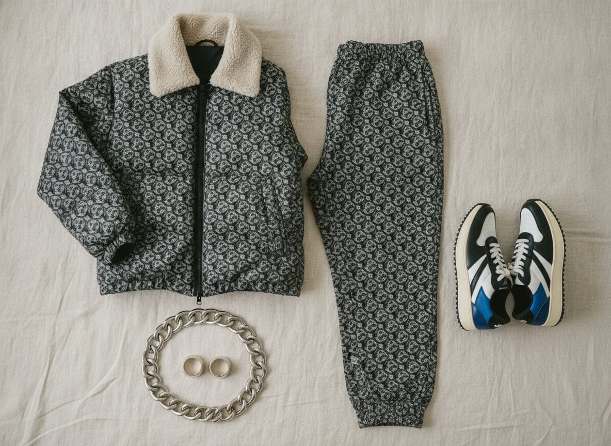
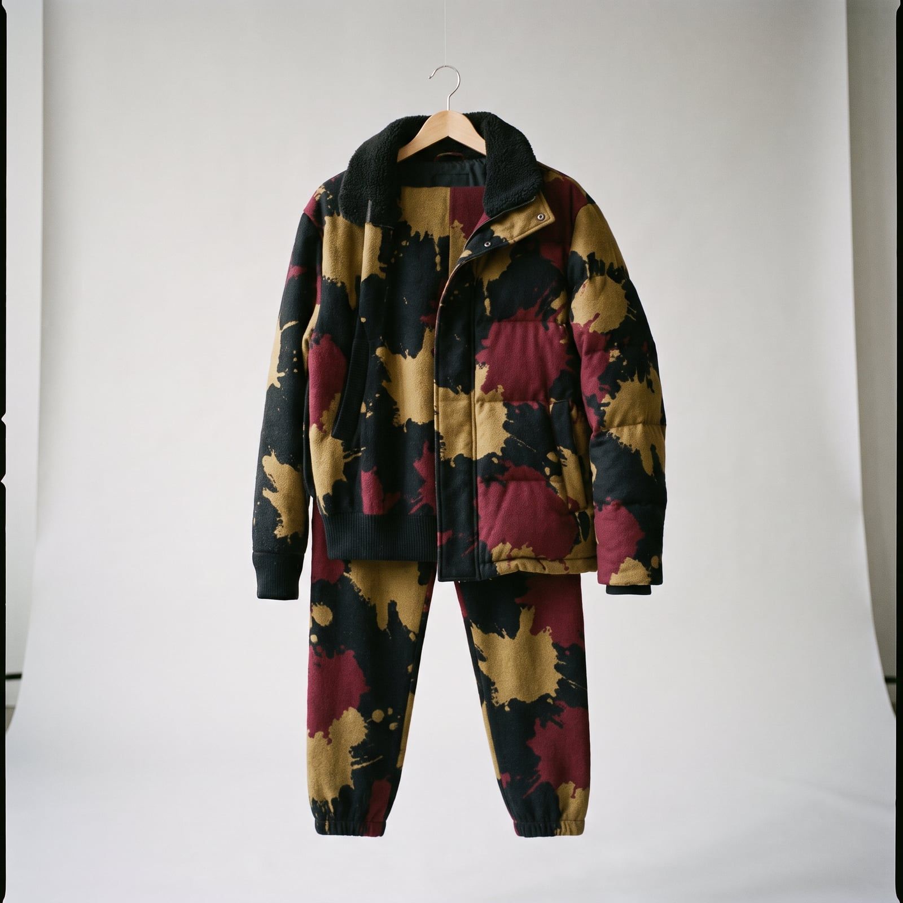
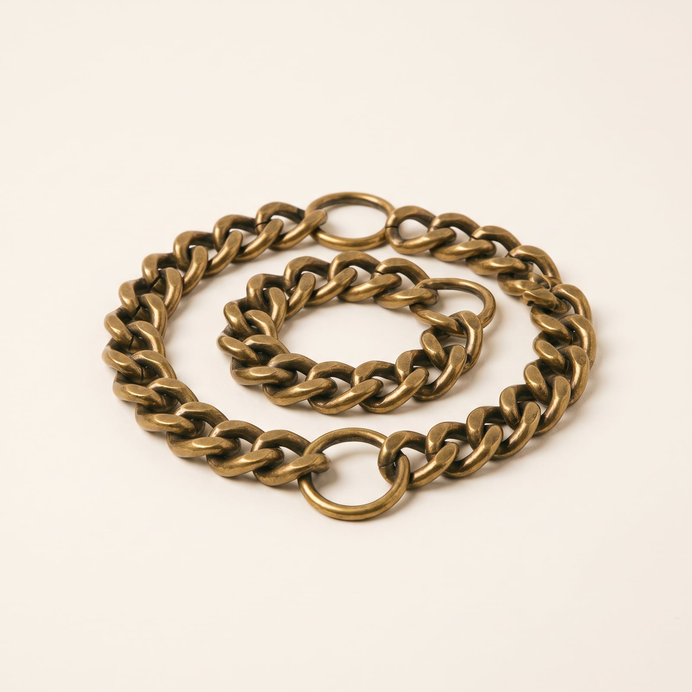
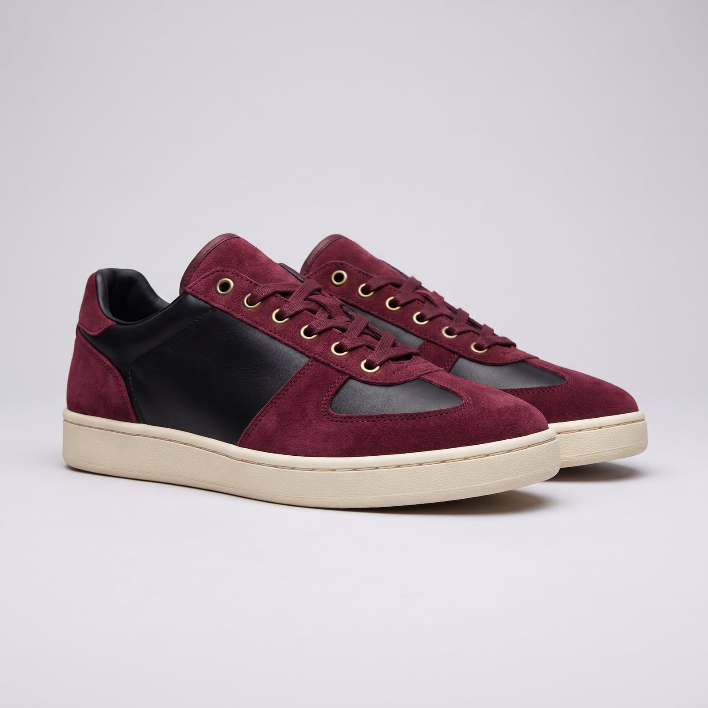
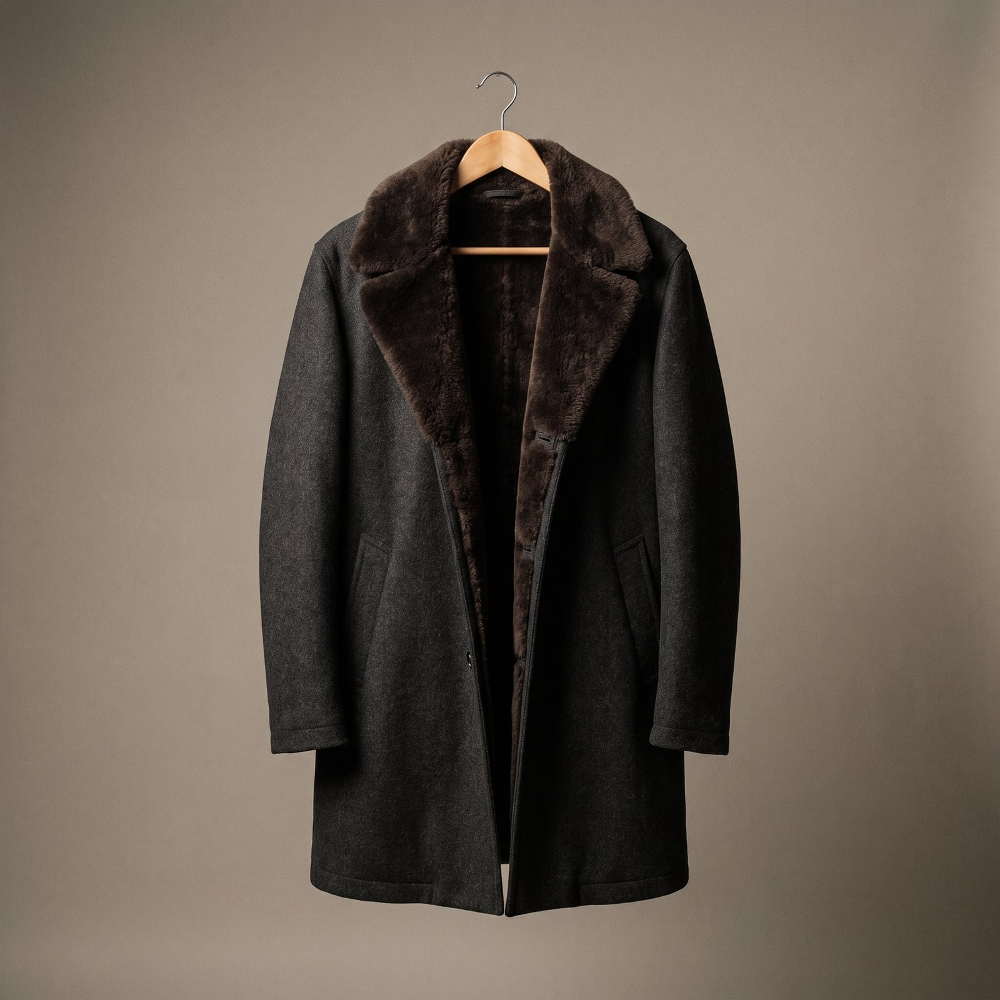
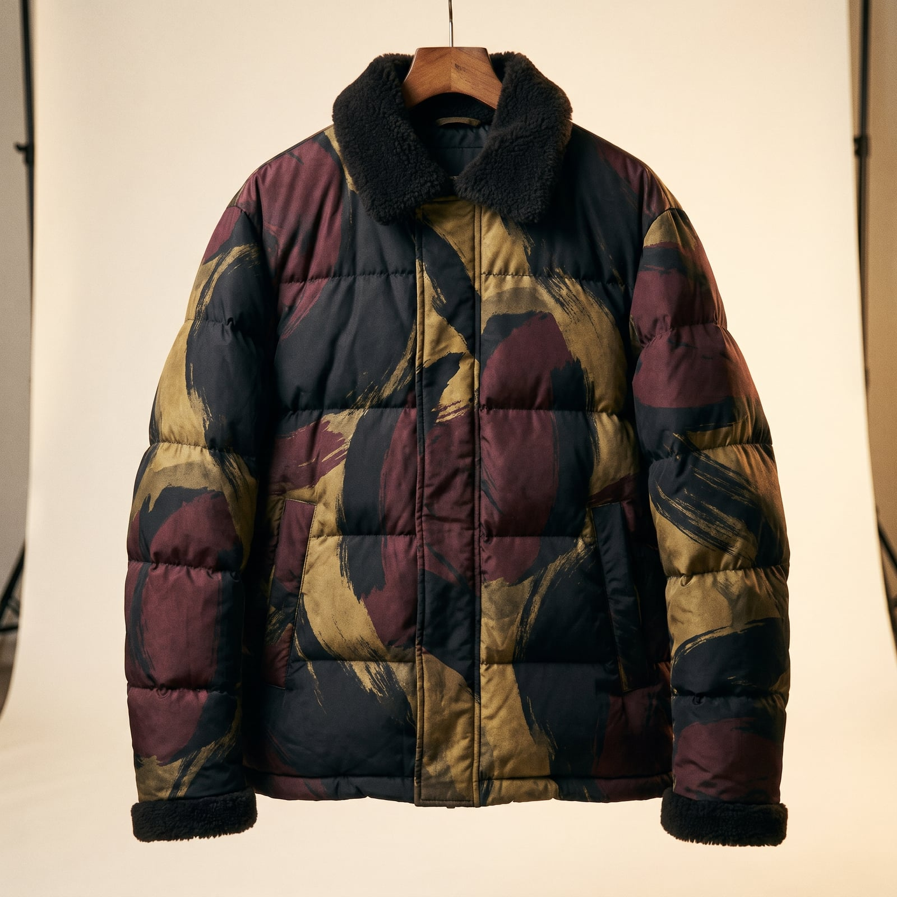

The Gearhead
Hip-hop's relationship with luxury fashion goes back to the 1980s, when artists started buying into European houses — Dapper Dan famously reworking Gucci and Louis Vuitton fabric into custom Harlem streetwear before the houses themselves caught up — but the full, unapologetic embrace of logomania came later, through the 1990s and 2000s, as chart success turned into genuine spending power and the clothes became a running scoreboard. Versace, Gucci, and Fendi monograms turned into a kind of currency, worn head-to-toe rather than in restrained doses.
The trademark is maximal branding used sincerely: tracksuits and puffers covered edge-to-edge in a house's monogram, chains heavy enough to matter, sneakers released in numbers small enough to matter more. Where old-money dressing hides its price tag, this wardrobe puts it on the outside, on purpose.
It suits people for whom success is meant to be visible, not implied — who see a logo as a legitimate signature rather than a compromise, and who'd rather be unmistakable than understated. There's an honesty in that: nobody's pretending the clothes are quiet.
- Head-to-toe monogram — a house's branding as the entire pattern
- Heavy chains and rings, worn as a visible ledger
- Tracksuits and puffers in bold, saturated brand colorways
- Limited sneakers, chosen partly for scarcity
- Fur and exotic leather trims layered without restraint


The Monogram Tracksuit
Once artists' spending power caught up to their taste for European luxury in the 1990s and 2000s, entire tracksuits covered edge-to-edge in a house's monogram became a way of wearing the brand itself as the pattern, rather than as a discreet label.
Genuine early-2000s logomania at accessible resale prices.
Shop this →Newer production with real brand recognition.
Shop this →The two houses most associated with this exact category.
Shop this →
The Chain
A heavy chain worn outside the shirt functions in hip-hop's relationship with fashion the way a pocket watch once did for a Victorian gentleman — a visible, load-bearing signal of what its owner can afford to carry around.
Real weight and finish at an accessible price.
Shop this →Genuine solid silver at real substantial weight.
Shop this →The material and weight this entire category ultimately gestures toward.
Shop this →
The Puffer Jacket
An oversized, logo-covered puffer became hip-hop's answer to a fur coat by the 2000s — genuinely warm, unmistakably branded, and voluminous enough to be seen from across a room or a music video set.
Genuine down warmth without the licensed branding.
Shop this →Real down fill and a recognizable, if not maximalist, brand signal.
Shop this →Maximalist branding integrated directly into premium down construction.
Shop this →
The Limited Sneaker
Scarcity itself became part of the design once sneaker releases started selling out in minutes — a shoe's rarity, not just its silhouette, became the thing being worn and displayed.
Real cultural cachet at retail price, if you can catch a release.
Shop this →Consistent demand and resale value above retail.
Shop this →Genuinely scarce releases verified through platforms like StockX or GOAT.
Shop this →
The Fur or Exotic Trim Piece
Fur and exotic skins layered onto outerwear or accessories without much restraint borrow directly from a much older tradition of visible wealth display, updated with streetwear's willingness to mix registers most old-money wardrobes keep separate.
Convincing faux fur at an accessible price.
Shop this →Genuine fur trim from houses that specialize in it.
Shop this →Full fur or genuine exotic skin from a house built around exactly this material.
Shop this →Buy pieces that are genuinely well-made under the branding — the boldest logo in the world still looks cheap on a poorly constructed garment, and this wardrobe is judged as closely on quality as any quieter one, just by a different audience. Let the palette be genuinely bold; a muted, cautious version of this style just looks like an expensive mistake.
Spend on the details that get photographed up close — the chain, the sneaker, the exact colorway — since this wardrobe is built to reward scrutiny, not to be glanced at from across a room.
Don't mix in deliberately quiet, minimal pieces expecting them to 'balance' the look — this wardrobe works through accumulation and confidence, and one restrained item doesn't read as taste, it reads as a budget running out mid-outfit.
This is a going-out and being-seen wardrobe, and it reads as excessive almost anywhere that isn't built for exactly that — a full head-to-toe monogrammed outfit at a quiet family gathering or a conservative office says something the room isn't set up to receive well. Save it for rooms built to notice it.
Lighter tracksuit fabrics in the same bold colorways, the puffer stays home, and the sneaker rotation shifts toward the more breathable pairs.
The puffer becomes the entire outfit's focus, worn open over the tracksuit, with a beanie in matching branding and boots instead of sneakers.
A logo-covered rain shell, still branded, still bold -- this wardrobe does not own a plain anything, weather included.
The heaviest puffer in rotation, insulated boots with as much branding as the rest of the outfit, and gloves chosen to match rather than just to warm.
A tailored piece from the same houses that make the tracksuits -- the logomania gets subtler, not absent, and the sneakers get swapped for the one genuinely formal shoe in the closet.

Dubai, Miami, and wherever the next major sneaker or fashion drop is happening in person rather than online — the trip is often built entirely around a single release date.
A hotel is chosen partly for how well it photographs, which is not treated as a shallow consideration but as a legitimate line item.
Rap biographies, especially the self-made ones, read partly as inspiration and partly as a business education that never got taught in school.
Magazines get read more for the ads than the articles — a full-page campaign for a coveted release is studied the way other people study a stock chart.
Find it on Amazon →Whatever's currently at the top of the charts, played loud, without much concern for whether it will still matter in six months.
A genuine, encyclopedic knowledge of hip-hop's back catalog sits underneath the current playlist, brought out to settle arguments about who actually did something first.
Listen on YouTube →A closet bigger than most people's bedroom, organized like a boutique, with lighting considered as carefully as any retail display.
A media setup that costs more than the car parked outside, which itself cost more than most houses.
See more on Pinterest →Shopping treated as a competitive sport — knowing about a release before it's announced counts as a genuine skill, not a coincidence.
A genuine passion for sneaker and streetwear history, and a car that gets more grooming and attention than most people give their pets.
Learn more →